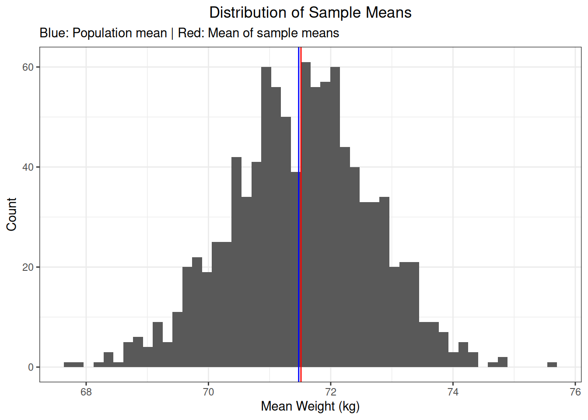
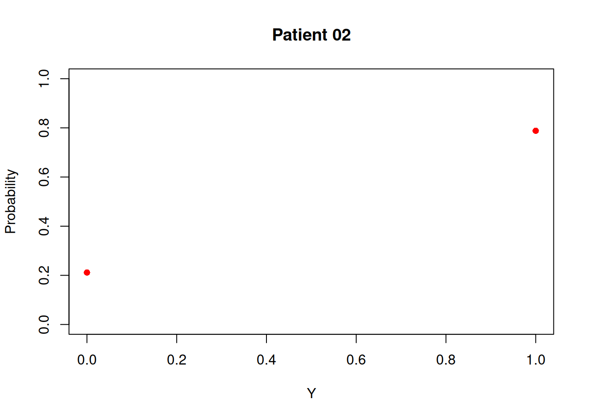

3 Logistic Regression
In this chapter, we explore logistic regression. This type of model can be used to estimate the probability of a particular event occurring or not. This means that the outcome must be binary, i.e., there are only two possible outcomes.
3.1 Ordinary Logistic Regression
The most well-known logistic regression is ordinary logistic regression. In a next chapter, we will discuss conditional logistic regression.
3.1.1 Context
Suppose we randomly select a patient and assess his/her survival status. The outcome of this random experiment is captured using the random variable \(Y\). The random variable \(Y\) can take on one of only two possible outcomes, therefore it is a binary random variable (or Bernoulli random variable).
If we repeat this process for \(n\) patients, then we have \(n\) random variables, i.e., \(Y_i\) for \(i = 1, 2, ..., n\). Assume we observe the following:
## i Y
## 1 1 1
## 2 2 0
## 3 3 0
## 4 4 1
## 5 5 0We have \(n = 5\) patients. For each patient, the outcome \(Y_i\) is observed. Because the variable \(Y_i\) is a Bernoulli random variable, its probability distribution is defined by the following probability mass function:
\[ f_i (Y_i) = \pi_i^{Y_i} \cdot (1 - \pi_i)^{(1 - Y_i)} \]
We again observe the previously observed outcomes but recognize that, for each patient, the outcome is drawn randomly from a Bernoulli distribution defined by \(\pi_i\):
## i Y P.Y...1.
## 1 1 1 0.2875775
## 2 2 0 0.7883051
## 3 3 0 0.4089769
## 4 4 1 0.8830174
## 5 5 0 0.9404673We can also visualize the five Bernoulli distributions for each of the patients.
for (idx in seq_along(probs)) {
prob <- probs[idx]
plot(
x = c(0, 1),
y = c(1 - prob, prob),
xlab = "Y",
ylab = "Probability",
main = paste0("Patient 0", idx),
ylim = c(0, 1),
col = "red",
pch = 16
)
}


3.1.2 Model Fitting
We use the heart dataset and denote the outcome in the heart dataset with the variable \(Y\), with \(Y = 1\) if the patient has a heart disease and \(Y = 0\) otherwise.
Prior to fitting a model, we cast the categorical variables to factors.
heart$ChestPainType <- factor(
x = heart$ChestPainType, levels = c("ASY", "NAP", "TA", "ATA")
)
heart$Sex <- factor(
x = heart$Sex, levels = c("F", "M")
)We fit the following model to the data:
\[ \mathbb{E} [Y_i] = \beta_0 + \beta_1 \cdot X_{age} + \beta_2 \cdot X_{male} \]
with \(X_{age}\) the age and \(X_{male} = 1\) if the person is male and \(X_{male} = 0\) otherwise. The model contains three parameters, i.e., \(\beta_0\), \(\beta_1\), and \(\beta_2\). We call glm() as follows to fit the model:
model <- glm(
formula = "HeartDisease ~ Age + Sex",
data = heart,
family = binomial(link = "logit")
)##
## Call:
## glm(formula = "HeartDisease ~ Age + Sex", family = binomial(link = "logit"),
## data = heart)
##
## Coefficients:
## Estimate Std. Error z value Pr(>|z|)
## (Intercept) -4.634893 0.481185 -9.632 < 2e-16 ***
## Age 0.066531 0.008165 8.148 3.69e-16 ***
## SexM 1.641195 0.189345 8.668 < 2e-16 ***
## ---
## Signif. codes: 0 '***' 0.001 '**' 0.01 '*' 0.05 '.' 0.1 ' ' 1
##
## (Dispersion parameter for binomial family taken to be 1)
##
## Null deviance: 1262.1 on 917 degrees of freedom
## Residual deviance: 1101.6 on 915 degrees of freedom
## AIC: 1107.6
##
## Number of Fisher Scoring iterations: 43.1.3 Interpretation
Us the parameter estimates, we have the following model:
\[ log(\frac{\pi_i}{1 - \pi_i}) = -4.634893 + 0.066531 \cdot X_{age} + 1.641195 \cdot X_{male} \]
Assume that person \(i\) is a 40-year-old woman. The probability of person \(i\) having a heart disease is the following:
\[ \begin{align} log(\frac{\pi_i}{1 - \pi_i}) &= -4.634893 + 0.066531 \cdot 40 + 1.641195 \cdot 0 \\ &= -4.634893 + 0.066531 \cdot 40 \\ &= -1.973653 \end{align} \]
The estimated logit equals -1.973653. The estimated odds of a 40-year-old woman having a heart disease is 0.1389483. This means that the probability of a 40-year-old woman having a heart disease is 0.1389483 times smaller than the probability of a 40-year-old woman not having a heart disease.
\[ \begin{align} log(\frac{\pi_i}{1 - \pi_i}) &= -1.973653 \\ &\leftrightarrow \frac{\pi_i}{1 - \pi_i} = exp(-1.973653) \\ &\leftrightarrow \frac{\pi_i}{1 - \pi_i} = 0.1389483 \end{align} \]
The estimated odds of a 40-year-old woman having a heart disease can be used to estimate the probability of such a person having a heart disease.
\[ \begin{align} log(\frac{\pi_i}{1 - \pi_i}) &\leftrightarrow \pi_i = \frac{exp(-1.973653)}{1 + exp(-1.973653)} \\ &\leftrightarrow \pi_i = \frac{0.1389483}{1 + 0.1389483} \\ &\leftrightarrow \pi_i = \frac{0.1389483}{1.1389483} \\ &\leftrightarrow \pi_i = 0.121997 \end{align} \]
Assume person \(j\) is a 40-year-old man. We can now also calculate the estimated odds of having a heart disease.
\[ \begin{align} log(\frac{\pi_j}{1 - \pi_j}) &= -4.634893 + 0.066531 \cdot 40 + 1.641195 \cdot 1 \\ &\leftrightarrow \frac{\pi_j}{1 - \pi_j} = exp(-4.634893 + 0.066531 \cdot 40 + 1.641195) \\ &\leftrightarrow \frac{\pi_j}{1 - \pi_j} = exp(-4.634893 + 0.066531 \cdot 40) \cdot exp(1.641195) \\ &\leftrightarrow \frac{\pi_j}{1 - \pi_j} = 0.1389483 \cdot 5.161334 \\ &\leftrightarrow \frac{\pi_j}{1 - \pi_j} = 0.7171586 \end{align} \]
From this, we can also see the following:
\[ \begin{align} log(\frac{\pi_j}{1 - \pi_j}) &= -4.634893 + 0.066531 \cdot 40 + 1.641195 \cdot 1 \\ &\leftrightarrow \frac{\pi_j}{1 - \pi_j} = exp(-4.634893 + 0.066531 \cdot 40 + 1.641195) \\ &\leftrightarrow \frac{\pi_j}{1 - \pi_j} = exp(-4.634893 + 0.066531 \cdot 40) \cdot exp(1.641195) \\ &\leftrightarrow exp(1.641195) = \frac{\frac{\pi_j}{1 - \pi_j}}{exp(-4.634893 + 0.066531 \cdot 40)} \\ &\leftrightarrow exp(1.641195) = \frac{\frac{\pi_j}{1 - \pi_j}}{\frac{\pi_i}{1 - \pi_i}} \end{align} \]
In other words, the estimate for \(\beta_2\) can be exponentiated to obtain an odds ratio, and more specifically the odds ratio of the odds of a 40-year-old man having a heart disease vs. a 40-year-old woman having a heart disease.
3.1.4 Maximum Likelihood Estimation
The model parameters are estimated using the maximum likelihood estimation framework. We let the random variable \(Y\) denote the outcome, with \(Y = 1\) indicating that the event of interest occurred and \(Y = 0\) that the event of interest did not occur. Because the variable \(Y\) is a binary variable its probability distribution can be described using the following probability mass function:
\[ \mathbb{P} (Y = y) = \pi^{y} \cdot (1 - \pi)^{(1 - y)} \]
with \(\pi\) representing the probability of \(Y = 1\). We can verify this:
\[ \mathbb{P} (Y = 1) = \pi^{1} \cdot (1 - \pi)^{(1 - 1)} = \pi \cdot (1 - \pi)^0 = \pi \]
and
\[ \mathbb{P} (Y = 0) = \pi^0 \cdot (1 - \pi)^{(1 - 0)} = (1 - \pi)^1 = 1 - \pi \]
This distribution is defined by a single parameter \(\pi\). In the simple logistic regression model, the probability of the event of interest occurring \(\pi\) is linked to the linear predictor as follows:
\[ \pi_i = \frac{exp(\beta_0 + \beta_1 x_i)}{1 + exp(\beta_0 + \beta_1 x_i)} \]
In other words, we have:
\[ log(\frac{\pi_i}{1 - \pi_i}) = \beta_0 + \beta_1 x_i + \epsilon_i \]
We can now derive the likelihood and log-likelihood function. The likelihood function is:
\[ \begin{align} L(\beta) &= \prod_{i = 1}^{n} \pi_i^{y_i} (1 - \pi_i)^{(1 - y_i)} \end{align} \]
The log-likelihood function is:
\[ \begin{align} l(\beta) = log(L(\beta)) &= log \left( \prod_{i = 1}^{n} \pi_i^{y_i} (1 - \pi_i)^{(1 - y_i)} \right) \\ &= \sum_{i = 1}^{n} \left[ log(\pi_i^{y_i} (1 - \pi_i)^{(1 - y_i)}) \right] \\ &= \sum_{i = 1}^{n} \left[ y_i \cdot log(\pi_i) + (1 - y_i) \cdot log(1 - \pi_i) \right] \\ &= \sum_{i = 1}^{n} \left[ y_i \cdot log(\pi_i) - y_i \cdot log(1 - \pi_i) + log(1 - \pi_i) \right] \\ &= \sum_{i = 1}^{n} \left[ y_i \cdot log(\frac{\pi_i}{1 - \pi_i}) + log(1 - \pi_i) \right] \end{align} \]
We can derive the following:
\[ \begin{align} 1 - \pi &= 1 - \frac{exp(\beta_0 + \beta_1 x_i)}{1 + exp(\beta_0 + \beta_1 x_i)} \\ &= \frac{1 + exp(\beta_0 + \beta_1 x_i)}{1 + exp(\beta_0 + \beta_1 x_i)} - \frac{exp(\beta_0 + \beta_1 x_i)}{1 + exp(\beta_0 + \beta_1 x_i)} \\ &= \frac{1}{1 + exp(\beta_0 + \beta_1 x_i)} \\ &= (1 + exp(\beta_0 + \beta_1 x_i))^{-1} \end{align} \]
This means the last expression for the log-likelihood can be simplified:
\[ \begin{align} l(\beta) = log(L(\beta)) &= \sum_{i = 1}^{n} \left[ y_i \cdot log(\frac{\pi_i}{1 - \pi_i}) + log(1 - \pi_i) \right] \\ &= \sum_{i = 1}^{n} \bigg[ y_i \cdot (\beta_0 + \beta_1 x_i) - log(1 + exp(\beta_0 + \beta_1 x_i)) \bigg] \end{align} \]
The maximum likelihood estimates are those values for the model parameters that minimize the log-likelihood. We can manually look for these maximum likelihood estimates.
3.2 Conditional Logistic Regression
In this chapter, we explore conditional logistic regression. Conditional logistic regression allows us to not have to estimate nuisance parameters. We will illustrate this with an example.
Suppose we have a dataset comprising data on 20 patients distributed across two hospitals (with 10 patients each). For each patient, we know what hospital they were admitted to, their age at the time of hospital admission, and if they survived their hospital stay.
# Create the dataset
set.seed(345)
df <- tibble::tibble(
i = 1L:20L,
hospital = factor(x = rep(c("A", "B"), each = 10), levels = c("A", "B")),
age = c(65, 70, 75, 60, 68, 72, 80, 78, 85, 76, 55, 60, 65, 70, 75, 80, 85, 90, 72, 78),
Y = c(1, 0, 1, 0, 1, 0, 0, 0, 0, 0, 1, 1, 1, 0, 1, 1, 0, 1, 0, 1)
)## # A tibble: 20 × 4
## i hospital age Y
## <int> <fct> <dbl> <dbl>
## 1 1 A 65 1
## 2 2 A 70 0
## 3 3 A 75 1
## 4 4 A 60 0
## 5 5 A 68 1
## 6 6 A 72 0
## 7 7 A 80 0
## 8 8 A 78 0
## 9 9 A 85 0
## 10 10 A 76 0
## 11 11 B 55 1
## 12 12 B 60 1
## 13 13 B 65 1
## 14 14 B 70 0
## 15 15 B 75 1
## 16 16 B 80 1
## 17 17 B 85 0
## 18 18 B 90 1
## 19 19 B 72 0
## 20 20 B 78 13.2.1 Definition
Let \(Y_i\) denote the outcome for patient \(i\), with \(Y_i = 1\) if patient \(i\) died and \(Y_i = 0\) otherwise. Let \(X_i\) denote the age of patient \(i\) at the time of hospital admission. Let \(Z_i\) denote the hospital at which patient \(i\) was admitted, with \(Z_i = 0\) if patient \(i\) was admitted to hospital A and \(Z_i = 1\) otherwise. We can now calculate the probability of patient \(i\) dying conditional on their age and the hospital where they were admitted to as:
\[ \mathbb{P} (Y_i = 1) = \frac{exp(\beta_z \cdot z_i + \beta_x \cdot x_i)}{1 + exp(\beta_z \cdot z_i + \beta_x \cdot x_i)} \]
We know that \(\beta_z = 0.24\) and \(\beta_x = 0.5\). We can now calculate the probability of dying for each patient.
# Define the parameters
B_z <- 1.85
B_x <- 0.05
# Calculate the probability of dying per patient
df <- df %>%
dplyr::rowwise() %>%
dplyr::mutate(Z_i = dplyr::if_else(hospital == "A", 0, 1), X_i = age) %>%
dplyr::mutate(P_i = exp(Z_i * B_z + X_i * B_x) / (1 + exp(Z_i * B_z + X_i * B_x)))## # A tibble: 20 × 7
## # Rowwise:
## i hospital age Y Z_i X_i P_i
## <int> <fct> <dbl> <dbl> <dbl> <dbl> <dbl>
## 1 1 A 65 1 0 65 0.963
## 2 2 A 70 0 0 70 0.971
## 3 3 A 75 1 0 75 0.977
## 4 4 A 60 0 0 60 0.953
## 5 5 A 68 1 0 68 0.968
## 6 6 A 72 0 0 72 0.973
## 7 7 A 80 0 0 80 0.982
## 8 8 A 78 0 0 78 0.980
## 9 9 A 85 0 0 85 0.986
## 10 10 A 76 0 0 76 0.978
## 11 11 B 55 1 1 55 0.990
## 12 12 B 60 1 1 60 0.992
## 13 13 B 65 1 1 65 0.994
## 14 14 B 70 0 1 70 0.995
## 15 15 B 75 1 1 75 0.996
## 16 16 B 80 1 1 80 0.997
## 17 17 B 85 0 1 85 0.998
## 18 18 B 90 1 1 90 0.998
## 19 19 B 72 0 1 72 0.996
## 20 20 B 78 1 1 78 0.9973.2.2 Probability
In this section, we outline how to get the probability of a particular outcome occurring. Suppose we have an ICU with five patients. For each patient, the presence of diabetes as an underlying comorbidity is recorded. Let \(X = 1\) denote that the patient has diabetes and \(X = 0\) otherwise. The probability of a patient having diabetes depends on several factors, such as age, sex, weight, lifestyle, genetics, etc, and therefore this probability differs between patients.
In the following table, we see that the probability that patient \(i = 1\) has diabetes is \(\mathbb{P} (X_1 = 1) = 0.312\) and for patient \(i = 4\) it is \(\mathbb{P} (X_4 = 1) = 0.887\).
## # A tibble: 5 × 2
## i P_i
## <int> <dbl>
## 1 1 0.312
## 2 2 0.582
## 3 3 0.638
## 4 4 0.887
## 5 5 0.248We can also calculate the probability of a patient not having diabetes. For this, the following probability mass function can be used:
\[ f(Y_i = y_1, \pi_i) = \pi_i^{y_i} \cdot (1 - \pi_i)^{(1 - y_i)} \]
We can verify this:
\[ f(Y_4 = 1, \pi_4) = 0.887^1 * (1 - 0.887)^{(1 - 1)} = 0.887 \]
and
\[ f(Y_4 = 0, \pi_4) = 0.887^0 * (1 - 0.887)^{(1 - 0)} = 0.113 \]
Let the random variable \(Y\) denote the number of patients in the ICU having diabetes. First, we must construct the sample space. One example of a possible outcome in the sample space is:
\[ (X_1 = 1, X_2 = 0, X_3 = 0, X_4 = 0, X_5 = 1) \]
This possible outcome maps to \(Y = 2\). Another example of a possible outcome:
\[ (X_1 = 0, X_2 = 1, X_3 = 1, X_4 = 0, X_5 = 1) \]
This possible outcome maps to \(Y = 3\). Another example of a possible outcome:
\[ (X_1 = 0, X_2 = 0, X_3 = 1, X_4 = 1, X_5 = 0) \]
This possible outcome maps to \(Y = 2\). Note that we now have two possible outcomes in the sample space that map to \(Y = 2\). The sample space contains 32 possible outcomes:
\[ {5 \choose 0} + {5 \choose 1} + {5 \choose 2} + {5 \choose 3} + {5 \choose 4} + {5 \choose 5} = 32 \]
The following are five examples of the sample space:
## # A tibble: 5 × 5
## Patient_1 Patient_2 Patient_3 Patient_4 Patient_5
## <dbl> <dbl> <dbl> <dbl> <dbl>
## 1 0 0 0 0 0
## 2 0 0 0 0 1
## 3 0 0 0 1 0
## 4 0 0 0 1 1
## 5 0 0 1 0 0We can now calculate the probability of each possible outcome occurring. For the possible outcome
\[ (X_1 = 0, X_2 = 1, X_3 = 1, X_4 = 0, X_5 = 1) \]
we have
\[ \begin{aligned} & \mathbb{P} (Y_1 = 0) \cdot \mathbb{P} (Y_2 = 1) \cdot \mathbb{P} (Y_3 = 1) \cdot \mathbb{P} (Y_4 = 0) \cdot \mathbb{P} (Y_5 = 1) \\ &= \prod_{i = 1}^{5} \bigg[ f(Y_i = y_i, \pi_i) \bigg] \\ &= f(Y_1 = 0, \pi_1) \cdot f(Y_2 = 1, \pi_2) \cdot f(Y_3 = 1, \pi_3) \cdot f(Y_4 = 0, \pi_4) \cdot f(Y_5 = 1, \pi_5) \\ &= (1 - 0.3121850) \cdot 0.5821874 \cdot 0.6381059 \cdot (1 - 0.8872664) \cdot 0.2481097 \\ &= 0.007147012 \end{aligned} \]
We can calculate this as follows:
# Get the observed outcome
Y_vector <- c(0, 1, 1, 0, 1)
# Calculate the probability
prob_Y <- prod(probs$P_i^Y_vector * (1 - probs$P_i)^(1 - Y_vector))
prob_Y## [1] 0.007147012This is the probability of this possible outcome occurring. This possible outcome maps to \(Y = 3\). If we want to know \(\mathbb{P} (Y = 3)\), we must sum the probabilities of every possible outcome that maps to \(Y = 3\). We define the set of all possible outcomes mapping to \(Y = 3\) as \(S(t)\) where \(t = 3\):
\[ S(t) = \{ (Y_1 = y_1^*, ..., Y_5 = y_5^*) | \sum_{i = 1}^{5} y_i^* = t \} \]
In the case of \(Y = 3\), \(S(3)\) contains ten possible outcomes. We calculate the probability of \(Y = 3\) as follows:
\[ \mathbb{P} (Y = 3) = \sum_{S(3)} \Bigg[ \prod_{i = 1}^{5} \bigg[ f(Y_i = y_i^*, \pi_i) \bigg] \Bigg] \]
We can calculate this as follows:
# Get the subset of the sample space that maps to Y = 3
event_space <- sample_space[rowSums(sample_space) == 3,, drop = F]
# Calculate the probability
prob_Y <- 0.0
for (i in 1:nrow(event_space)) {
# Get the observed outcome
Y_vector <- as.integer(event_space[i,, drop = TRUE])
prob_Y <- prob_Y + prod((probs$P_i)^Y_vector * (1 - probs$P_i)^(1 - Y_vector))
}## [1] 0.3736777So, we have \(\mathbb{P} (Y = 3) = 0.3736777\).
As stated earlier, the probability of a patient \(i\) having diabetes depends on several factors, such as sex, age, weight, etc. The probability of a patient \(i\) having diabetes is denoted as \(\pi_i = \mathbb{P} (Y_i = 1)\). This probability can be derived as follows:
\[ \pi_i = \frac{exp(\alpha + \beta \textbf{X}^{-1})}{1 + exp(\alpha + \beta \textbf{X}^{-1})} \]
We can use this to rewrite the following:
\[ \begin{align} f(Y_i = y_i, \pi_i) &= \pi_i^{y_i} * (1 - \pi_i)^{(1 - y_i)} \\ &= \frac{exp(y_i \cdot (\alpha + \beta \textbf{X}^{-1}))}{1 + exp(\alpha + \beta \textbf{X}^{-1})} \end{align} \]
For a particular possible outcome of the sample space, we have:
\[ \begin{align} \prod_{i = 1}^5 f(Y_i = y_i, \pi_i) &= \prod_{i = 1}^5 \frac{exp(y_i \cdot (\alpha + \beta \textbf{X}^{-1}))}{1 + exp(\alpha + \beta \textbf{X}^{-1})} \\ &= \frac{\prod_{i = 1}^5 exp(y_i \cdot (\alpha + \beta \textbf{X}^{-1}))}{\prod_{i = 1}^5 \big[ 1 + exp(\alpha + \beta \textbf{X}^{-1}) \big]} \\ &= \frac{\prod_{i = 1}^5 exp(y_i \alpha + y_i \beta \textbf{X}^{-1}))}{\prod_{i = 1}^5 \big[ 1 + exp(\alpha + \beta \textbf{X}^{-1}) \big]} \\ &= \frac{exp(\sum_{i = 1}^5 \big[ y_i \alpha + y_i \beta \textbf{X}^{-1} \big] )}{\prod_{i = 1}^5 \big[ 1 + exp(\alpha + \beta \textbf{X}^{-1}) \big]} \\ &= \frac{exp(\sum_{i = 1}^5 y_i \alpha + \sum_{i = 1}^5 y_i \beta \textbf{X}^{-1})}{\prod_{i = 1}^5 \big[ 1 + exp(\alpha + \beta \textbf{X}^{-1}) \big]} \\ &= \frac{exp(\alpha \sum_{i = 1}^5 y_i + \sum_{i = 1}^5 y_i \beta \textbf{X}^{-1})}{\prod_{i = 1}^5 \big[ 1 + exp(\alpha + \beta \textbf{X}^{-1}) \big]} \\ \end{align} \]
3.2.3 Conditional Probability
We can calculate the probability \(\mathbb{P} (Y = y)\). But we can also calculate the conditional probability of a particular possible outcome given the event of interest. Suppose we are not interested in the following:
\[ \mathbb{P} (X_1 = 0, X_2 = 1, X_3 = 1, X_4 = 0, X_5 = 1) \]
but in the following:
\[ \mathbb{P} (X_1 = 0, X_2 = 1, X_3 = 1, X_4 = 0, X_5 = 1 | Y = 3) \]
We can calculate this as follows:
\[ \begin{align} \mathbb{P} (X_1 = 0, X_2 = 1, X_3 = 1, X_4 = 0, X_5 = 1 | Y = 3) &= \frac{\mathbb{P} (X_1 = 0, X_2 = 1, X_3 = 1, X_4 = 0, X_5 = 1)}{\mathbb{P} (Y = 3)} \\ &= \frac{\mathbb{P} (X_1 = 0, X_2 = 1, X_3 = 1, X_4 = 0, X_5 = 1)}{\sum_{S(3)} \Bigg[ \prod_{i = 1}^{5} \bigg[ f(Y_i = y_i^*, \pi_i) \bigg] \Bigg]} \end{align} \]
3.2.4 Probability
Before continuing our explanation on conditional logistic regression, we focus on how to calculate the probability of a particular outcome occurring. For this, we first focus on a single hospital, i.e., we focus on hospital A.
## # A tibble: 10 × 7
## # Rowwise:
## i hospital age Y Z_i X_i P_i
## <int> <fct> <dbl> <dbl> <dbl> <dbl> <dbl>
## 1 1 A 65 1 0 65 0.963
## 2 2 A 70 0 0 70 0.971
## 3 3 A 75 1 0 75 0.977
## 4 4 A 60 0 0 60 0.953
## 5 5 A 68 1 0 68 0.968
## 6 6 A 72 0 0 72 0.973
## 7 7 A 80 0 0 80 0.982
## 8 8 A 78 0 0 78 0.980
## 9 9 A 85 0 0 85 0.986
## 10 10 A 76 0 0 76 0.978Hospital A has 10 patients, and there are two possible outcomes for each patient, dead or alive. The outcome of interest \(Y\) is the number of patients that have died during their hospital stay. The data frame above shows one possible outcome for hospital A where two out of ten patients died during their hospital stay. More specifically, patients \(i = 1\) and \(i = 5\) died. This is only one of a few possible outcomes where two patients die. There are, in fact, \(10 \choose 2 = 45\) possible outcomes in which two patients die. The total number of possible outcomes is shown below, where \(Y\) denotes how many patients died during their hospital stay and \(SS\) denotes how many of the possible outcomes in the sample space map to \(Y\).
## # A tibble: 11 × 2
## Y SS
## <int> <dbl>
## 1 0 1
## 2 1 10
## 3 2 45
## 4 3 120
## 5 4 210
## 6 5 252
## 7 6 210
## 8 7 120
## 9 8 45
## 10 9 10
## 11 10 1So, with \(Y = 9\), there are 9 possible outcomes mapping to this outcome. We can define the set of possible outcomes mapping to \(Y = 9\) as follows:
\[ S(t) = \{ (Y_1 = y_1^*, ..., Y_{10} = y_{10}^*) | \sum_{i = 1}^{10} y_i^* = t \} \]
with \(t = y\). In this case, \(S(t)\) denotes the set of possible outcomes mapping to \(Y = t\). If we know the probability of each patient \(i\) dying, then, for each possible outcome we can calculate the probability of that outcome occurring as follows:
\[ \begin{align} \mathbb{P} (\textbf{Y} = \textbf{y}) = \mathbb{P} (Y_1 = y_1, ..., Y_{10} = y_{10}) &= \mathbb{P} (Y_1 = y_1) \times \text{ ... } \times\mathbb{P} (Y_{10} = y_{10}) \end{align} \]
If we want to know the probability of \(Y = 3\), then we must first obtain the probabilities for each possible outcome in \(S(3)\) and sum these up. So we have:
\[ \sum_{S(t)} \mathbb{P} (\textbf{Y} = \textbf{y} | t = 3) \]
We can calculate this:
# Construct the sample space
sample_space <- gtools::permutations(
n = 2, r = 10,
v = c(0, 1), repeats.allowed = TRUE
)
sample_space <- tibble::as_tibble(sample_space, .name_repair = "minimal")
# Get the subset of possible outcomes corresponding to Y = 3
event_space <- sample_space[rowSums(sample_space) == 3,, drop = F]
# Calculate the probability of Y = 3
prob_Y <- 0.0
probs <- df %>% dplyr::filter(hospital == "A") %>% dplyr::pull(P_i)
for (i in 1L:nrow(event_space)) {
# Get the outcomes for each patient corresponding to Y = 3
Y <- as.integer(event_space[i,, drop = TRUE])
# Calculate the probability of this particular outcome occurring
prob_Y <- prob_Y + prod(probs^Y * (1 - probs)^(1 - Y))
}
prob_Y## [1] 8.732308e-10\[ \mathbb{P} (\textbf{Y} = \textbf{y}) = \mathbb{P} (Y_1 = y_1, Y_2 = y_2, ..., Y_n = Y_n) &= \frac{exp(\beta_z \cdot z_i + \beta_x \cdot x_i)}{1 + exp(\beta_z \cdot z_i + \beta_x \cdot x_i)} \]
Now, suppose we are only interested in \(\beta_x\) and not in \(\beta_z\), the latter being a nuisance parameter. We would like to eliminate \(\beta_z\) from the estimation. We can do this by conditioning the likelihood function. This results in an estimate only for age \(X_i\). Within each hospital, we want to calculate the probability of obtaining a particular outcome, e.g., 3 out of 10 patients died.
Let us look at our two hospitals and the outcomes. We can then see that 3 out of 10 patients died in hospital A and 7 out of 10 patients in hospital B.
##
## 0 1
## A 7 3
## B 3 7We can calculate the probability of this outcome for each hospital. To calculate the probability of a single patient dying, we have:
\[ \mathbb{P} (Y_i = 1) = \frac{exp(\beta_z z_i + \beta_x x_i)}{1 + exp(\beta_z z_i + \beta_x x_i)} \]
Or if we do not know what the outcome is but we want to calculate the probability of that outcome:
\[ \mathbb{P} (Y_i = y_i) = \frac{exp(y_i \cdot (\beta_z z_i + \beta_x x_i))}{1 + exp(\beta_z z_i + \beta_x x_i)} \]
We have ten patients per hospital. If we want to calculate the probability of a particular outcome occurring, we have:
\[ \begin{align} \mathbb{P} (Y_1 = y_1, ..., Y_n = y_n) &= \prod_{i = 1}^{n} \frac{exp(y_i \cdot (\beta_z z_i + \beta_x x_i))}{1 + exp(\beta_z z_i + \beta_x x_i)} \\ &= \frac{\prod_{i = 1}^{n} exp(y_i \cdot (\beta_z z_i + \beta_x x_i))}{\prod_{i = 1}^{n} [1 + exp(\beta_z z_i + \beta_x x_i)]} \\ &= \frac{\prod_{i = 1}^{n} exp(y_i \beta_z z_i + y_i \beta_x x_i))}{\prod_{i = 1}^{n} [1 + exp(\beta_z z_i + \beta_x x_i)]} \\ &= \frac{exp(\sum_{i = 1}^{n} y_i \beta_z z_i + \sum_{i = 1}^{n} y_i \beta_x x_i))}{\prod_{i = 1}^{n} [1 + exp(\beta_z z_i + \beta_x x_i)]} \\ &= \frac{exp(\beta_z \sum_{i = 1}^{n} y_i z_i + \beta_x \sum_{i = 1}^{n} y_i x_i))}{\prod_{i = 1}^{n} [1 + exp(\beta_z z_i + \beta_x x_i)]} \end{align} \]
We can now calculate the probability of the outcome \(Y_1 = 1\), \(Y_3 = 1\), and \(Y_8 = 1\) in hospital A occurring. Note that we specify three particular patients that have died. But if we are only interested in 3 out of 10 patients dying in hospital A. In that case, there are \({10 \choose 3} = 120\) outcomes of interest. First, we define this set of 120 outcomes:
\[ S(t) = \{ (Y_1 = y_1, Y_2, = y_2, ..., Y_n = y_n) | \sum_{i = 1}^{n} y_i = t \} \]
To calculate the probability of \(S(t)\) occurring, we can calculate this as follows:
\[ \begin{align} \mathbb{P} (S(t)) &= \sum_{S(t)} \mathbb{P} (Y_1 = y_i, ..., Y_n = y_n) \\ &= \sum_{S(t)} [\frac{exp(\beta_z \sum_{i = 1}^{n} y_i z_i + \beta_x \sum_{i = 1}^{n} y_i x_i))}{\prod_{i = 1}^{n} [1 + exp(\beta_z z_i + \beta_x x_i)]}] \\ &= \frac{1}{\prod_{i = 1}^{n} [1 + exp(\beta_z z_i + \beta_x x_i)]} \cdot \sum_{S(t)} [exp(\beta_z \sum_{i = 1}^{n} y_i z_i + \beta_x \sum_{i = 1}^{n} y_i x_i))] \end{align} \]
We can now calculate the conditional probability of the outcome \(Y_1 = 1\), \(Y_3 = 1\), and \(Y_8\) conditional on that 3 out of 10 patients died in hospital A.
\[ \begin{align} \mathbb{P} (Y_1 = 0, Y_2 = 0, Y_3 = 1, ..., Y_{10} = 0 | \sum_{i} y_i = 10) &= \frac{\mathbb{P} (Y_1 = y_1, ..., Y_{10} = y_{10})}{\mathbb{P} (S(t = 3))} \\ &= \frac{\frac{exp(\beta_z \sum_{i = 1}^{n} y_i z_i + \beta_x \sum_{i = 1}^{n} y_i x_i)}{\prod_{i = 1}^{n} [1 + exp(\beta_z z_i + \beta_x x_i)]}}{\frac{1}{\prod_{i = 1}^{n} [1 + exp(\beta_z z_i + \beta_x x_i)]} \cdot \sum_{S(t)} [exp(\beta_z \sum_{i = 1}^{n} y_i z_i + \beta_x \sum_{i = 1}^{n} y_i x_i))]} \\ &= \frac{exp(\beta_z \sum_{i = 1}^{n} y_i z_i + \beta_x \sum_{i = 1}^{n} y_i x_i)}{\sum_{S(t)} [exp(\beta_z \sum_{i = 1}^{n} y_i z_i + \beta_x \sum_{i = 1}^{n} y_i x_i)]} \end{align} \]
Because we look at each hospital individually, we know what the value is for \(z_i\) for each patient. If we look at hospital B, we know that \(z_i = 1\) for \(i = 1, ..., 10\). In that case, we have:
\[ \begin{align} \mathbb{P} (Y_1 = 0, Y_2 = 0, Y_3 = 1, ..., Y_{10} = 0 | \sum_{i} y_i = 10) &= \frac{exp(\beta_z \sum_{i = 1}^{n} y_i z_i + \beta_x \sum_{i = 1}^{n} y_i x_i)}{\sum_{S(t)} [exp(\beta_z \sum_{i = 1}^{n} y_i z_i + \beta_x \sum_{i = 1}^{n} y_i x_i)]} \\ &= \frac{exp(\beta_z \sum_{i = 1}^{n} y_i + \beta_x \sum_{i = 1}^{n} y_i x_i)}{\sum_{S(t)} [exp(\beta_z \sum_{i = 1}^{n} y_i + \beta_x \sum_{i = 1}^{n} y_i x_i)]} \\ &= \frac{exp(\beta_z t + \beta_x \sum_{i = 1}^{n} y_i x_i)}{\sum_{S(t)} [exp(\beta_z t + \beta_x \sum_{i = 1}^{n} y_i x_i)]} \\ &= \frac{exp(\beta_z t) exp(\beta_x \sum_{i = 1}^{n} y_i x_i)}{\sum_{S(t)} [exp(\beta_z t) exp(\beta_x \sum_{i = 1}^{n} y_i x_i)]} \\ &= \frac{exp(\beta_z t) exp(\beta_x \sum_{i = 1}^{n} y_i x_i)}{exp(\beta_z t) \sum_{S(t)} [exp(\beta_x \sum_{i = 1}^{n} y_i x_i)]} \\ &= \frac{exp(\beta_x \sum_{i = 1}^{n} y_i x_i)}{\sum_{S(t)} [exp(\beta_x \sum_{i = 1}^{n} y_i x_i)]} \end{align} \]
This is the conditional probability. We can use this to determine the conditional likelihood and log-likelihood, in which we do not have to estimate the nuisance parameter \(\beta_z\).